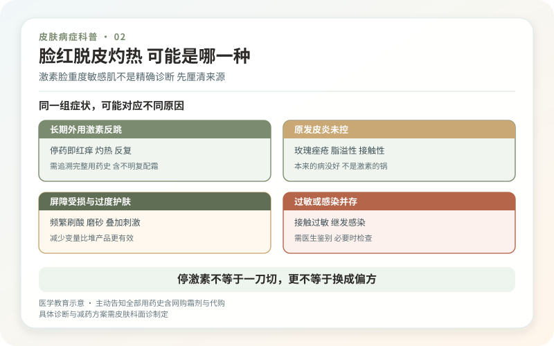
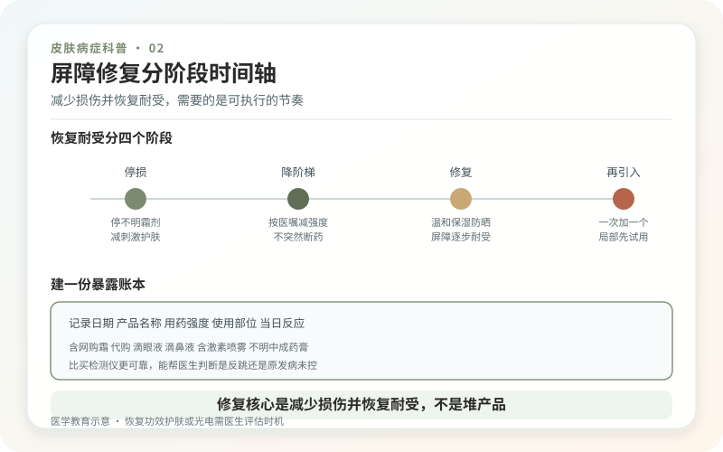

我不同意把所有“干、红、痒、刺痛”都包装成同一种“激素脸”。皮肤屏障受损是一种状态，敏感肌是症状描述，而外用糖皮质激素相关皮炎涉及具体用药暴露；三者不能互相替代。玫瑰痤疮、接触性皮炎、脂溢性皮炎和口周皮炎也可能有几乎相同的外观。
糖皮质激素是重要药物，规范使用能控制湿疹等炎症，并不是“碰一下就上瘾”。问题多发生在面部长期、反复或不知情地使用效力不合适的激素，尤其是成分不明的祛痘霜、美白霜、所谓修复膏。可能出现皮肤变薄、毛细血管扩张、痘样或口周皮疹，停用后短期反跳。网络所说的“激素依赖性皮炎”并非总是边界清晰的单一诊断，医生更需要描述原发病、药物种类、强度、时间与停药反应。

面诊时，把“我用了药膏”说具体
尽量带上包装、购买记录和照片，说明每天涂几次、涂了多久、停后几天加重。正规药名比“白色小药膏”有用。医生会观察红斑分布、丘疹脓疱、脱屑、毛细血管和眼部症状，必要时考虑斑贴试验、真菌检查或其他鉴别。没有一台“皮肤检测仪”能单独确认屏障受损，更不能靠一张水油图决定全部治疗。
若出现面部迅速肿胀、眼唇受累、大片渗液结痂、发热或呼吸困难，应及时就医；这不是在家继续“戒断”的情形。

停激素不等于一刀切，更不等于换成偏方
非处方、不明成分激素应停止继续滥用，但长期使用处方激素者怎样减停，要由开药医生结合病情决定。骤停后加重可能是原病复发、反跳或其他疾病显现，不能仅凭反应证明“排激素”。医生可能根据诊断短期调整外用抗炎药，处理玫瑰痤疮或口周皮炎，必要时使用系统治疗。
所谓“排毒爆发期”“越红越说明修复有效”没有科学依据。治疗若持续让皮肤灼痛、起疱或渗出，就应该复评，而不是被要求买下一阶段产品。
屏障修复的核心是减少损伤并恢复耐受
急性期把流程压缩到温和清洁、成分简单的保湿和可耐受防晒。洗脸水不宜过热，不用磨砂、洁面仪、频繁刷酸和高浓度活性物；保湿剂可从少量、局部开始测试。完全不洗脸、不保湿，或者连续数月只用生理盐水湿敷，也不一定更安全，反复湿敷还可能浸渍皮肤。
“纯天然”不等于低敏，精油、植物提取物、香精和防腐剂都可能引起接触性皮炎。一次换一件产品，观察数天；若每次使用都在相同部位红痒，可暂停并记录。皮肤恢复常按周到月计算，耐受会波动，不必把偶尔发红解释为全部前功尽弃。
什么时候可以恢复功效护肤或光电？
先看基础炎症是否稳定：日常清洁不再明显刺痛，红斑和丘疹减少，处方方案已稳定一段时间。之后一次只增加一个低刺激产品。光子、激光、射频和化学换肤并不是“修屏障”的通用起点；活动性皮炎时做项目可能加重炎症和色沉。若确有血管扩张或色素问题，也应在诊断明确、皮肤相对稳定后讨论。
可靠的恢复计划会写清楚哪些是已确诊疾病，哪些只是症状，哪些产品先停、多久复评、出现什么情况要提前就诊。别把“敏感”当成皮肤性格，也别把它变成无限消费的入口。
建一份“暴露账本”，比买检测仪更可靠
把近半年用过的处方药、网购药膏、祛痘美白产品、面膜和美容项目按时间排列，能找到包装就拍下成分和批号。记录停用后几天出现什么变化，而不是只写“反弹”。如果每次发作都与染发、指甲胶、香味喷雾或某件防晒同步，还要考虑从手和空气间接接触到面部的可能。
面诊时应区分“既往长期激素暴露已经证实”和“只是怀疑产品里有激素”。前者可讨论药物相关损伤，后者需要证据，不能因为停某产品后发红就反推成分。必要时可通过正规检测和监管渠道处理，而不是让消费者自行做网络试纸实验。
恢复耐受要有分阶段规则
第一阶段只追求不再持续灼痛、渗出和新发丘疹；第二阶段让清洁、保湿、防晒稳定；第三阶段才讨论痘印、血管或抗老。每阶段至少维持一段可观察时间，一次只改变一个变量。今天不刺痛，不代表明天可以同时刷酸和做光电。
也要给方案设停止条件：产品连续使用后疼痛越来越强、皮肤出现水疱渗液、眼周肿胀，或处方治疗数周仍无趋势改善，都应复诊。所谓“修复期必须经历爆皮和爆痘”不是通行规律，痛苦不能自动证明产品有效。